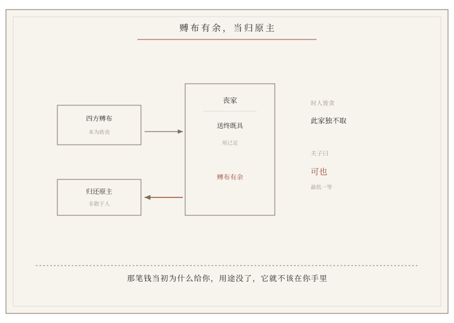

檀弓上 · 三·九十一 · 第 294 课
孟献子之丧，司徒旅归四布。夫子曰：「可也。」
说什么事：鲁国大夫孟献子去世，丧事办完，赙赠的泉布还有剩余。他家的家臣司徒便派属下的下士，把这些钱一一送还四方来赙的人。孔子说：可以。
落在哪一层：丧不贪利。论「丧家有余，当归于人」。
为何编在此位：前课 293 收在「名与实」，此课转入「取与」——丧事里最难守的不是仪节，是钱。自此以下十节，一路论「俭」「不害人」「不厄人」，都是同一件事的不同侧面。
【经】孟獻子之喪，司徒旅歸四布。夫子曰：「可也。」
【注】獻子，魯大夫仲孫蔑。旅，下士也。司徒使下士歸四方之賻布。
【疏】此一节论丧不贪利之事。孟献子之丧，送终既具，赙布有余，其家臣司徒敬子禀承主人之意，使旅下士归还四方赙主人之泉布也。谓「四方赙」者，泉布本助丧用，今既有余，故归还之也。时人皆贪，献子之家独能如此，故夫子曰「可也」，善其能廉。皇氏以为献子有余布，归之于君，君令国之司徒归赙于四方；案《春秋》，鲁上卿季氏也，仲孙蔑之卒，季氏无谥曰敬子者，皇氏之言非也。熊氏以为献子家臣为司徒，故《左传》「叔孙氏之司马鬷戾」，是家臣亦有司徒司马也。
孟献子 鲁国大夫，名蔑，仲孙氏，谥献。春秋中期鲁国重臣。
司徒 此处非国之大司徒。疏引熊氏之说，以为献子之家臣，家臣亦有司徒、司马之号，引《左传》「叔孙氏之司马鬷戾」为证。
旅 注「下士也」。旅为下士之通称，此指司徒属下之众士。
归 送还。非「归之于君」，乃「归之于四方来赙者」。
四布 四方之赙布。赙，以财物助丧；布，此指泉布（钱）。疏明「泉布本助丧用」。
可也 孔子之评。不是「善」，不是「美」，只是「可」——够格，过得去。
孟献子去世，家中办完丧事，赙赠的钱还有剩余。家臣司徒派属下的下士，把这些钱一一送还给四方送赙的人。孔子说：「可以。」
此节只有三句，重心在最后两个字：可也。
不说「善」，不说「贤」，只说「可」。这两个字的斤两，须与注对着看：注只说「时人皆贪，善其能廉」——善的是「能廉」，不是「能施」。
丧家收赙，本是常礼。赙布本为助丧而设，事毕有余，这钱按当时的惯例归丧家所有——时人皆贪，贪的就是这一份「惯例」。献子之家把余钱退回原主，等于把一份人人视为己有的东西交了出去。
孔子只给一个「可」。这里面有一层分寸：退钱是应当的，不是额外的德。若赞之过高，反把「不贪」抬成了「美德」，而它本来是底线。
疏还留下一段考据：皇侃以为献子把余布归君，君命国之司徒转归四方；疏驳之，理由是鲁之上卿为季氏，仲孙蔑卒时，季氏无谥「敬子」者。熊氏以为司徒是献子家臣，疏从之，引《左传》叔孙氏之司马鬷戾为证。这一驳一从，说明此节的「司徒」二字曾生歧解——大到可以改变整件事的性质：若司徒是国之司徒，则退钱是奉君命而行，其「廉」就打了折扣；若是家臣，则是丧家自己拿的主意，那个「可」才落到实处。
第一层 赙布的性质 赙是助丧之资，不是赠与。助丧的钱，其用途被限定在丧事上；事毕有余，它原来的用途就消失了。用途一消失，钱就不该留在手里。这一层极清楚：不是丧家慷慨，是那笔钱本不属于他。
第二层 「时人皆贪」四个字的分量 注不说「人皆如此」，说「时人皆贪」。四个字把献子之举从「守礼」推到了「逆时」。礼在书上是一回事，在当时的鲁国是另一回事；众人都拿，独他不拿，这才需要孔子开口说一个「可」。若人人如此，夫子不必评。
第三层 为什么只给一个「可」 礼家评事，有「善」「美」「可」「犹」「末失」诸等。此节用最低一等。「可」的意思是：合乎分，不出格，够了。赞不过其实是礼家的自律——把底线说成美德，底线就会失守；下一次有人不退，就可以说「那是美德，我不必」。
第四层 退给谁 疏辨「四方之赙」而非「君」。这一字之差，是全节的关节。归君，是把余财交给权力，丧家仍是「散」；归四方，是把钱退回每一个具体出钱的人，丧家是「还」。前者仍有恩泽之意，后者只是结账。结账不需要感激，也不需要表彰。
与今日何干 今人办丧、办婚、办会，常有「收得多了」的情形。多出来的那一份，多半被当作「人情往来」自然留下。此节问的是一句更硬的话：这笔钱当初为什么给你？用途没了，它还该在你手里吗。
| 左 | 右 |
|---|---|
| 送终既具 | 用已足 |
| 赙布有余 | 钱有余 |
| 司徒旅 | 家臣遣下士 |
| 归四布 | 还于原主 |
| 时人皆贪 | 当时的常态 |
| 独能如此 | 此节的例外 |
| 善其能廉 | 所许者廉 |
| 可也 | 最低一等 |
画一处丧家门外，视点平视略低。门内一侧堆着几只装满钱币的麻袋与空了的木箱，箱盖敞着。门外一条土路上，两名短衣之人（背向观者，正把一袋钱递向对面一位远来的士人，士人作推辞之状）分立路两侧。门前阶上立着一位深衣长者，双手当胸，面朝土路。不写文字、不画人面细节。赭色只用在递出的那只钱袋的系绳，与门内那只敞开的空箱沿。
